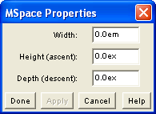

When an mspace element is selected, the MSpace Properties option on the Properties menu becomes active. Double clicking on an <mspace> element in the MathML Ancestry also opens this dialog.

The fields in this dialog correspond to attributes of the mspace element.
Each field accepts one MathML size value. Note that he default value is 0 for all three attributes, so even though a percentage is an admissible value, it will have no effect.